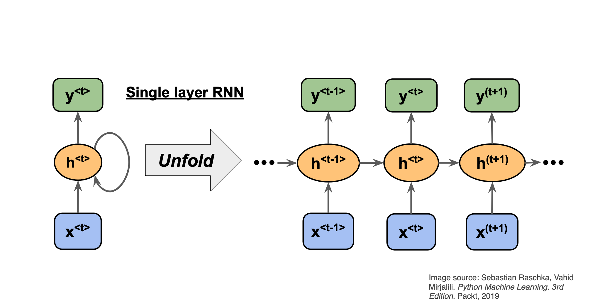
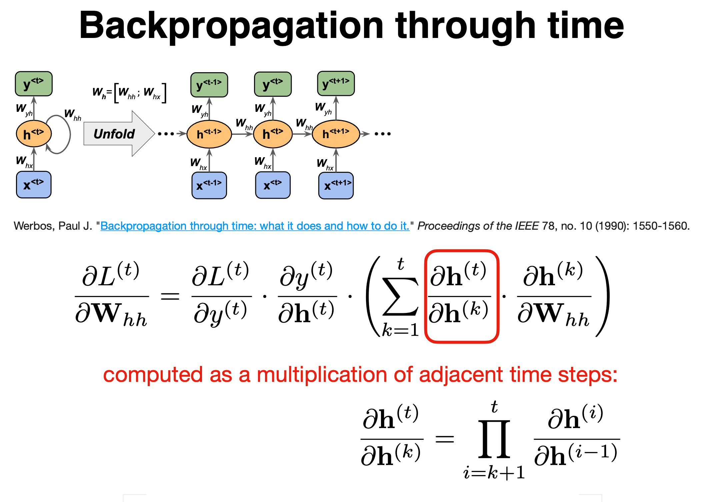

Recurrent neural networks (RNNs) have in general no probabilistic component in a model. With a given fixed input and target from data, the RNNs learn the intermediate association between various layers. The inputs, outputs, and internal representation (hidden states) are all real-valued vectors.
In a traditional NN, it is assumed that every input is independent of each other. But with sequential data, the input at a given stage \( t \) depends on the input from the previous stage \( t-1 \)
To gain some intuition on how we can use RNNs for time series, let us tailor the representation of the solution of a differential equation as a time series.
Consider the famous differential equation (Newton's equation of motion for damped harmonic oscillations, scaled in terms of dimensionless time)
$$ \frac{d^2x}{dt^2}+\eta\frac{dx}{dt}+x(t)=F(t), $$where \( \eta \) is a constant used in scaling time into a dimensionless variable and \( F(t) \) is an external force acting on the system. The constant \( \eta \) is a so-called damping.
In solving the above second-order equation, it is common to rewrite it in terms of two coupled first-order equations with the velocity
$$ v(t)=\frac{dx}{dt}, $$and the acceleration
$$ \frac{dv}{dt}=F(t)-\eta v(t)-x(t). $$With the initial conditions \( v_0=v(t_0) \) and \( x_0=x(t_0) \) defined, we can integrate these equations and find their respective solutions.
Let us focus on the velocity only. Discretizing and using the simplest possible approximation for the derivative, we have Euler's forward method for the updated velocity at a time step \( i+1 \) given by
$$ v_{i+1}=v_i+\Delta t \frac{dv}{dt}_{\vert_{v=v_i}}=v_i+\Delta t\left(F_i-\eta v_i-x_i\right). $$Defining a function
$$ h_i(x_i,v_i,F_i)=v_i+\Delta t\left(F_i-\eta v_i-x_i\right), $$we have
$$ v_{i+1}=h_i(x_i,v_i,F_i). $$The equation
$$ v_{i+1}=h_i(x_i,v_i,F_i). $$can be used to train a feed-forward neural network with inputs \( v_i \) and outputs \( v_{i+1} \) at a time \( t_i \). But we can think of this also as a recurrent neural network with inputs \( v_i \), \( x_i \) and \( F_i \) at each time step \( t_i \), and producing an output \( v_{i+1} \).
Noting that
$$ v_{i}=v_{i-1}+\Delta t\left(F_{i-1}-\eta v_{i-1}-x_{i-1}\right)=h_{i-1}. $$we have
$$ v_{i}=h_{i-1}(x_{i-1},v_{i-1},F_{i-1}), $$and we can rewrite
$$ v_{i+1}=h_i(x_i,h_{i-1},F_i). $$We can thus set up a recurring series which depends on the inputs \( x_i \) and \( F_i \) and the previous values \( h_{i-1} \). We assume now that the inputs at each step (or time \( t_i \)) is given by \( x_i \) only and we denote the outputs for \( \tilde{y}_i \) instead of \( v_{i_1} \), we have then the compact equation for our outputs at each step \( t_i \)
$$ y_{i}=h_i(x_i,h_{i-1}). $$We can think of this as an element in a recurrent network where our network (our model) produces an output \( y_i \) which is then compared with a target value through a given cost/loss function that we optimize. The target values at a given step \( t_i \) could be the results of a measurement or simply the analytical results of a differential equation.



We can think of the recurrent net as a layered, feed-forward net with shared weights and then train the feed-forward net with weight constraints.
We can also think of this training algorithm in the time domain:
The forward pass determines the slope of the linear function used for backpropagating through each neuron
RNNs have difficulty dealing with long-range dependencies.
The expression for the simplest Recurrent network resembles that of a regular feed-forward neural network, but now with the concept of temporal dependencies
$$ \begin{align*} \mathbf{a}^{(t)} & = U * \mathbf{x}^{(t)} + W * \mathbf{h}^{(t-1)} + \mathbf{b}, \notag \\ \mathbf{h}^{(t)} &= \sigma_h(\mathbf{a}^{(t)}), \notag\\ \mathbf{y}^{(t)} &= V * \mathbf{h}^{(t)} + \mathbf{c}, \notag\\ \mathbf{\hat{y}}^{(t)} &= \sigma_y(\mathbf{y}^{(t)}). \end{align*} $$



To derive the expression of the gradients of \( \mathcal{L} \) for the RNN, we need to start recursively from the nodes closer to the output layer in the temporal unrolling scheme - such as \( \mathbf{y} \) and \( \mathbf{h} \) at final time \( t = \tau \),
$$ \begin{align*} (\nabla_{ \mathbf{y}^{(t)}} \mathcal{L})_{i} &= \frac{\partial \mathcal{L}}{\partial L^{(t)}}\frac{\partial L^{(t)}}{\partial y_{i}^{(t)}}, \notag\\ \nabla_{\mathbf{h}^{(\tau)}} \mathcal{L} &= \mathbf{V}^\mathsf{T}\nabla_{ \mathbf{y}^{(\tau)}} \mathcal{L}. \end{align*} $$For the following hidden nodes, we have to iterate through time, so by the chain rule,
$$ \begin{align*} \nabla_{\mathbf{h}^{(t)}} \mathcal{L} &= \left(\frac{\partial\mathbf{h}^{(t+1)}}{\partial\mathbf{h}^{(t)}}\right)^\mathsf{T}\nabla_{\mathbf{h}^{(t+1)}}\mathcal{L} + \left(\frac{\partial\mathbf{y}^{(t)}}{\partial\mathbf{h}^{(t)}}\right)^\mathsf{T}\nabla_{ \mathbf{y}^{(t)}} \mathcal{L}. \end{align*} $$Similarly, the gradients of \( \mathcal{L} \) with respect to the weights and biases follow,
$$ \begin{align*} \nabla_{\mathbf{c}} \mathcal{L} &=\sum_{t}\left(\frac{\partial \mathbf{y}^{(t)}}{\partial \mathbf{c}}\right)^\mathsf{T} \nabla_{\mathbf{y}^{(t)}} \mathcal{L} \notag\\ \nabla_{\mathbf{b}} \mathcal{L} &=\sum_{t}\left(\frac{\partial \mathbf{h}^{(t)}}{\partial \mathbf{b}}\right)^\mathsf{T} \nabla_{\mathbf{h}^{(t)}} \mathcal{L} \notag\\ \nabla_{\mathbf{V}} \mathcal{L} &=\sum_{t}\sum_{i}\left(\frac{\partial \mathcal{L}}{\partial y_i^{(t)} }\right)\nabla_{\mathbf{V}^{(t)}}y_i^{(t)} \notag\\ \nabla_{\mathbf{W}} \mathcal{L} &=\sum_{t}\sum_{i}\left(\frac{\partial \mathcal{L}}{\partial h_i^{(t)}}\right)\nabla_{\mathbf{w}^{(t)}} h_i^{(t)} \notag\\ \nabla_{\mathbf{U}} \mathcal{L} &=\sum_{t}\sum_{i}\left(\frac{\partial \mathcal{L}}{\partial h_i^{(t)}}\right)\nabla_{\mathbf{U}^{(t)}}h_i^{(t)}. \label{eq:rnn_gradients3} \end{align*} $$Recurrent neural networks (RNNs) have in general no probabilistic component in a model. With a given fixed input and target from data, the RNNs learn the intermediate association between various layers. The inputs, outputs, and internal representation (hidden states) are all real-valued vectors.
In a traditional NN, it is assumed that every input is independent of each other. But with sequential data, the input at a given stage \( t \) depends on the input from the previous stage \( t-1 \)
The function \( g \) can any of the standard activation functions, that is a Sigmoid, a Softmax, a ReLU and other. The parameters are trained through the so-called back-propagation through time (BPTT) algorithm.
Besides a simple recurrent neural network layer, as discussed above, there are two other commonly used types of recurrent neural network layers: Long Short Term Memory (LSTM) and Gated Recurrent Unit (GRU). For a short introduction to these layers see https://medium.com/mindboard/lstm-vs-gru-experimental-comparison-955820c21e8b and https://medium.com/mindboard/lstm-vs-gru-experimental-comparison-955820c21e8b.
LSTM uses a memory cell for modeling long-range dependencies and avoid vanishing gradient problems. Capable of modeling longer term dependencies by having memory cells and gates that controls the information flow along with the memory cells.
To preserve information for a long time in the activities of an RNN, we use a circuit that implements an analog memory cell.
The LSTM is a unit cell that is made of three gates:
It also introduces a cell state \( c \), which can be thought of as the long-term memory, and a hidden state \( h \) which can be thought of as the short-term memory.

The first stage is called the forget gate, where we combine the input at (say, time \( t \)), and the hidden cell state input at \( t-1 \), passing it through the Sigmoid activation function and then performing an element-wise multiplication, denoted by \( \otimes \).
It follows
$$ \mathbf{f}^{(t)} = \sigma(W_f\mathbf{x}^{(t)} + U_f\mathbf{h}^{(t-1)} + \mathbf{b}_f) $$where \( W \) and \( U \) are the weights respectively.
This is called the forget gate since the Sigmoid activation function's outputs are very close to \( 0 \) if the argument for the function is very negative, and \( 1 \) if the argument is very positive. Hence we can control the amount of information we want to take from the long-term memory.
The next stage is the input gate, which consists of both a Sigmoid function (\( \sigma_i \)), which decide what percentage of the input will be stored in the long-term memory, and the \( \tanh_i \) function, which decide what is the full memory that can be stored in the long term memory. When these results are calculated and multiplied together, it is added to the cell state or stored in the long-term memory, denoted as \( \oplus \).
We have
$$ \mathbf{i}^{(t)} = \sigma_g(W_i\mathbf{x}^{(t)} + U_i\mathbf{h}^{(t-1)} + \mathbf{b}_i), $$and
$$ \mathbf{\tilde{c}}^{(t)} = \tanh(W_c\mathbf{x}^{(t)} + U_c\mathbf{h}^{(t-1)} + \mathbf{b}_c), $$again the \( W \) and \( U \) are the weights.
The forget gate and the input gate together also update the cell state with the following equation,
$$ \mathbf{c}^{(t)} = \mathbf{f}^{(t)} \otimes \mathbf{c}^{(t-1)} + \mathbf{i}^{(t)} \otimes \mathbf{\tilde{c}}^{(t)}, $$where \( f^{(t)} \) and \( i^{(t)} \) are the outputs of the forget gate and the input gate, respectively.
The final stage of the LSTM is the output gate, and its purpose is to update the short-term memory. To achieve this, we take the newly generated long-term memory and process it through a hyperbolic tangent (\( \tanh \)) function creating a potential new short-term memory. We then multiply this potential memory by the output of the Sigmoid function (\( \sigma_o \)). This multiplication generates the final output as well as the input for the next hidden cell (\( h^{\langle t \rangle} \)) within the LSTM cell.
We have
$$ \begin{aligned} \mathbf{o}^{(t)} &= \sigma_g(W_o\mathbf{x}^{(t)} + U_o\mathbf{h}^{(t-1)} + \mathbf{b}_o), \\ \mathbf{h}^{(t)} &= \mathbf{o}^{(t)} \otimes \sigma_h(\mathbf{c}^{(t)}). \\ \end{aligned} $$where \( \mathbf{W_o,U_o} \) are the weights of the output gate and \( \mathbf{b_o} \) is the bias of the output gate.
The dynamics of a stable spiral evolve in such a way that the system's trajectory converges to a fixed point while spiraling inward. These oscillations around the fixed point are gradually dampened until the system reaches a steady state at a fixed point. Suppose we have a two-dimensional system of coupled differential equations of the form
$$ \begin{align*} \frac{dx}{dt} &= ax + by \notag,\\ \frac{dy}{dt} &= cx + dy. \end{align*} $$The choice of \( a,b,c,d \in \mathbb{R} \) completely determines the behavior of the solution, and for some of these values, albeit not all, the system is said to be a stable spiral. This condition is satisfied when the eigenvalues of the matrix formed by the coefficients are complex conjugates with a negative real part.
A Lorenz attractor presents some added complexity. It exhbits what is called a chaotic behavior and its behavior is extremely sensitive to initial conditions.
The expression for the Lorenz attractor evolution consists of a set of three coupled nonlinear differential equations given by
$$ \begin{align*} \frac{dx}{dt} &= \sigma (y-x), \notag\\ \frac{dy}{dt} &= x(\rho -z) - y, \notag\\ \frac{dz}{dt} &= xy- \beta z. \end{align*} $$For this problem, \( {x,y,z} \) are the variables that determine the state of the system in the space while \( \sigma, \rho \) and \( \beta \) are, similarly to the constants \( a,b,c,d \) of the stable spiral, parameters that influence largely how the system evolves.
Both of the above-mentioned systems are governed by differential equations, and as such, they can be solved numerically through some integration scheme such as forward-Euler or fourth-order Runge-Kutta.
We use the common choice of parameters \( \sigma =10 \), \( \rho =28 \), \( \beta =8/3 \). This choice generates complex and aesthetic trajectories that have been extensively investigated and benchmarked in the literature of numerical simulations.
For the stable spiral, we employ \( a = 0.2 \), \( b = -1.0 \), \( c = 1.0 \), \( d = 0.2 \). This gives a good number of oscillations before reaching a steady state.
Training and testing procedures in recurrent neural networks follow what is usual for regular FNNs, but some special consideration needs to be taken into account due to the sequential character of the data. Training and testing batches must not be randomly shuffled for it would clearly decorrelate the time-series points and leak future information into present or past points of the model.
The training algorithm can become computationally costly, especially if the losses are evaluated for all previous time steps. While other architectures such as that of LSTMs can be used to mitigate that, it is also possible to introduce another hyperparameter responsible for controlling how much of the network will be unfolded in the training process, adjusting how much the network will remember from previous points in time . Similarly, the number of steps the network predicts in the future per iteration greatly influences the assessment of the loss function. .
The training and testing batches were separated into whole trajectories. This means that instead of training and testing on different fractions of the same trajectory, all trajectories that were tested had completely new initial conditions. In this sense, from a total of 10 initial conditions (independent trajectories), 9 were used for training and 1 for testing. Each trajectory consisted of 800 points in each space coordinate.
The problem we have is a time-series forecasting problem, so, we are free to choose the loss function amongst the big collection of regression losses. Using the mean-squared error of the predicted versus factual trajectories of the dynamic systems is a natural choice.
It is a convex function, so given sufficient time and appropriate learning rates, it is guaranteed to converge to global minima irrespective of the weightss random initializations.
$$ \begin{align} \mathcal{L}_{MSE} = \frac{1}{N}\sum_{i}^N (y(\mathbf{x}_i) - \hat{y}(\mathbf{x}_i, \mathbf{\theta}))^2 \label{_auto1} \end{align} $$where \( \mathbf{\theta} \) represents the set of all parameters of the network, and \( \mathbf{x}_i \) are the input values
A cost/loss function that is based on the observational and predicted data, is normally referred to as a purely data-driven approach.
While this is a well-established way of assessing regressions, it does not make use of other intuitions we might have over the problem we are trying to solve. At the same time, it is a well-established fact that neural network models are data-greedy - they need large amounts of data to be able to generalize predictions outside the training set. One way to try to mitigate this is by using physics-informed neural networks (PINNs) when possible.
Trying to improve the performance of our model beyond training sets, PINNs then add physics-informed penalties to the loss function. In essence, this means that we add a worse evaluation score to predictions that do not respect physical laws we think our real data should obey. This procedure often has the advantage of trimming the parameter space without adding bias to the model if the constraints imposed are correct, but the choice of the physical laws can be a delicate one.
A general way of expressing this added penalty to the loss function is shown here
$$ \begin{align*} \mathcal{L} = w_{MSE}\mathcal{L}_{MSE} + w_{PI}\mathcal{L}_{PI}. \end{align*} $$Here, the weights \( w_{MSE} \) and \( w_{PI} \) explicitly mediate how much influence the specific parts of the total loss function should contribute. See the above project link for more details.
Autoencoders are artificial neural networks capable of learning efficient representations of the input data (these representations are called codings) without any supervision (i.e., the training set is unlabeled). These codings typically have a much lower dimensionality than the input data, making autoencoders useful for dimensionality reduction.
More importantly, autoencoders act as powerful feature detectors, and they can be used for unsupervised pretraining of deep neural networks.
Lastly, they are capable of randomly generating new data that looks very similar to the training data; this is called a generative model. For example, you could train an autoencoder on pictures of faces, and it would then be able to generate new faces. Surprisingly, autoencoders work by simply learning to copy their inputs to their outputs. This may sound like a trivial task, but we will see that constraining the network in various ways can make it rather difficult. For example, you can limit the size of the internal representation, or you can add noise to the inputs and train the network to recover the original inputs. These constraints prevent the autoencoder from trivially copying the inputs directly to the outputs, which forces it to learn efficient ways of representing the data. In short, the codings are byproducts of the autoencoder’s attempt to learn the identity function under some constraints.
Autoencoders were first introduced by Rumelhart, Hinton, and Williams in 1986 with the goal of learning to reconstruct the input observations with the lowest error possible.
Why would one want to learn to reconstruct the input observations? If you have problems imagining what that means, think of having a dataset made of images. An autoencoder would be an algorithm that can give as output an image that is as similar as possible to the input one. You may be confused, as there is no apparent reason of doing so. To better understand why autoencoders are useful we need a more informative (although not yet unambiguous) definition.
An autoencoder is a type of algorithm with the primary purpose of learning an "informative" representation of the data that can be used for different applications (see Bank, D., Koenigstein, N., and Giryes, R., Autoencoders) by learning to reconstruct a set of input observations well enough.
Autoencoders are neural networks where the outputs are its own inputs. They are split (see whiteboard drawing) into an encoder part which maps the input \( \boldsymbol{x} \) via a function \( f(\boldsymbol{x},\boldsymbol{W}) \) (this is the encoder part) to a so-called code part (or intermediate part) with the result \( \boldsymbol{h} \)
$$ \boldsymbol{h} = f(\boldsymbol{x},\boldsymbol{W})), $$where \( \boldsymbol{W} \) are the weights to be determined. The decoder parts maps, via its own parameters (weights given by the matrix \( \boldsymbol{V} \) and its own biases) to the final ouput
$$ \tilde{\boldsymbol{x}} = g(\boldsymbol{h},\boldsymbol{V})). $$The goal is to minimize the construction error.
The hope is that the training of the autoencoder can unravel some useful properties of the function \( f \). They are often trained with only single-layer neural networks (although deep networks can improve the training) and are essentially given by feed forward neural networks.
If the function \( f \) and \( g \) are given by a linear dependence on the weight matrices \( \boldsymbol{W} \) and \( \boldsymbol{V} \), we can show that for a regression case, by miminizing the mean squared error between \( \boldsymbol{x} \) and \( \tilde{\boldsymbol{x}} \), the autoencoder learns the same subspace as the standard principal component analysis (PCA).
In order to see this, we define then
$$ \boldsymbol{h} = f(\boldsymbol{x},\boldsymbol{W}))=\boldsymbol{W}\boldsymbol{x}, $$and
$$ \tilde{\boldsymbol{x}} = g(\boldsymbol{h},\boldsymbol{V}))=\boldsymbol{V}\boldsymbol{h}=\boldsymbol{V}\boldsymbol{W}\boldsymbol{x}. $$With the above linear dependence we can in turn define our optimization problem in terms of the optimization of the mean-squared error, that is we wish to optimize
$$ \min_{\boldsymbol{W},\boldsymbol{V}\in {\mathbb{R}}}\frac{1}{n}\sum_{i=0}^{n-1}\left(x_i-\tilde{x}_i\right)^2=\frac{1}{n}\vert\vert \boldsymbol{x}-\boldsymbol{V}\boldsymbol{W}\boldsymbol{x}\vert\vert_2^2, $$where we have used the definition of a norm-2 vector, that is
$$ \vert\vert \boldsymbol{x}\vert\vert_2 = \sqrt{\sum_i x_i^2}. $$This is equivalent to our functions learning the the same subspace as the PCA method. This means that we can interpret AEs as a dimensionality reduction method. To see this, we need to remind ourselves about the PCA method.
The principal component analysis deals with the problem of fitting a low-dimensional affine subspace \( S \) of dimension \( d \) much smaller than the total dimension \( D \) of the problem at hand (our data set). Mathematically it can be formulated as a statistical problem or a geometric problem. In our discussion of the theorem for the classical PCA, we will stay with a statistical approach. Historically, the PCA was first formulated in a statistical setting in order to estimate the principal component of a multivariate random variable.
We have a data set defined by a design/feature matrix \( \boldsymbol{X} \) (see below for its definition)
A good read is for example Vidal, Ma and Sastry.
Before we discuss the PCA theorem, we need to remind ourselves about the definition of the covariance and the correlation function. These are quantities
Suppose we have defined two vectors \( \hat{x} \) and \( \hat{y} \) with \( n \) elements each. The covariance matrix \( \boldsymbol{C} \) is defined as
$$ \boldsymbol{C}[\boldsymbol{x},\boldsymbol{y}] = \begin{bmatrix} \mathrm{cov}[\boldsymbol{x},\boldsymbol{x}] & \mathrm{cov}[\boldsymbol{x},\boldsymbol{y}] \\ \mathrm{cov}[\boldsymbol{y},\boldsymbol{x}] & \mathrm{cov}[\boldsymbol{y},\boldsymbol{y}] \\ \end{bmatrix}, $$where for example
$$ \mathrm{cov}[\boldsymbol{x},\boldsymbol{y}] =\frac{1}{n} \sum_{i=0}^{n-1}(x_i- \overline{x})(y_i- \overline{y}). $$With this definition and recalling that the variance is defined as
$$ \mathrm{var}[\boldsymbol{x}]=\frac{1}{n} \sum_{i=0}^{n-1}(x_i- \overline{x})^2, $$we can rewrite the covariance matrix as
$$ \boldsymbol{C}[\boldsymbol{x},\boldsymbol{y}] = \begin{bmatrix} \mathrm{var}[\boldsymbol{x}] & \mathrm{cov}[\boldsymbol{x},\boldsymbol{y}] \\ \mathrm{cov}[\boldsymbol{x},\boldsymbol{y}] & \mathrm{var}[\boldsymbol{y}] \\ \end{bmatrix}. $$The covariance takes values between zero and infinity and may thus lead to problems with loss of numerical precision for particularly large values. It is common to scale the covariance matrix by introducing instead the correlation matrix defined via the so-called correlation function
$$ \mathrm{corr}[\boldsymbol{x},\boldsymbol{y}]=\frac{\mathrm{cov}[\boldsymbol{x},\boldsymbol{y}]}{\sqrt{\mathrm{var}[\boldsymbol{x}] \mathrm{var}[\boldsymbol{y}]}}. $$The correlation function is then given by values \( \mathrm{corr}[\boldsymbol{x},\boldsymbol{y}] \in [-1,1] \). This avoids eventual problems with too large values. We can then define the correlation matrix for the two vectors \( \boldsymbol{x} \) and \( \boldsymbol{y} \) as
$$ \boldsymbol{K}[\boldsymbol{x},\boldsymbol{y}] = \begin{bmatrix} 1 & \mathrm{corr}[\boldsymbol{x},\boldsymbol{y}] \\ \mathrm{corr}[\boldsymbol{y},\boldsymbol{x}] & 1 \\ \end{bmatrix}, $$In the above example this is the function we constructed using pandas.
In our derivation of the various regression algorithms like Ordinary Least Squares or Ridge regression we defined the design/feature matrix \( \boldsymbol{X} \) as
$$ \boldsymbol{X}=\begin{bmatrix} x_{0,0} & x_{0,1} & x_{0,2}& \dots & \dots x_{0,p-1}\\ x_{1,0} & x_{1,1} & x_{1,2}& \dots & \dots x_{1,p-1}\\ x_{2,0} & x_{2,1} & x_{2,2}& \dots & \dots x_{2,p-1}\\ \dots & \dots & \dots & \dots \dots & \dots \\ x_{n-2,0} & x_{n-2,1} & x_{n-2,2}& \dots & \dots x_{n-2,p-1}\\ x_{n-1,0} & x_{n-1,1} & x_{n-1,2}& \dots & \dots x_{n-1,p-1}\\ \end{bmatrix}, $$with \( \boldsymbol{X}\in {\mathbb{R}}^{n\times p} \), with the predictors/features \( p \) refering to the column numbers and the entries \( n \) being the row elements. We can rewrite the design/feature matrix in terms of its column vectors as
$$ \boldsymbol{X}=\begin{bmatrix} \boldsymbol{x}_0 & \boldsymbol{x}_1 & \boldsymbol{x}_2 & \dots & \dots & \boldsymbol{x}_{p-1}\end{bmatrix}, $$with a given vector
$$ \boldsymbol{x}_i^T = \begin{bmatrix}x_{0,i} & x_{1,i} & x_{2,i}& \dots & \dots x_{n-1,i}\end{bmatrix}. $$With these definitions, we can now rewrite our \( 2\times 2 \) correlation/covariance matrix in terms of a moe general design/feature matrix \( \boldsymbol{X}\in {\mathbb{R}}^{n\times p} \). This leads to a \( p\times p \) covariance matrix for the vectors \( \boldsymbol{x}_i \) with \( i=0,1,\dots,p-1 \)
$$ \boldsymbol{C}[\boldsymbol{x}] = \begin{bmatrix} \mathrm{var}[\boldsymbol{x}_0] & \mathrm{cov}[\boldsymbol{x}_0,\boldsymbol{x}_1] & \mathrm{cov}[\boldsymbol{x}_0,\boldsymbol{x}_2] & \dots & \dots & \mathrm{cov}[\boldsymbol{x}_0,\boldsymbol{x}_{p-1}]\\ \mathrm{cov}[\boldsymbol{x}_1,\boldsymbol{x}_0] & \mathrm{var}[\boldsymbol{x}_1] & \mathrm{cov}[\boldsymbol{x}_1,\boldsymbol{x}_2] & \dots & \dots & \mathrm{cov}[\boldsymbol{x}_1,\boldsymbol{x}_{p-1}]\\ \mathrm{cov}[\boldsymbol{x}_2,\boldsymbol{x}_0] & \mathrm{cov}[\boldsymbol{x}_2,\boldsymbol{x}_1] & \mathrm{var}[\boldsymbol{x}_2] & \dots & \dots & \mathrm{cov}[\boldsymbol{x}_2,\boldsymbol{x}_{p-1}]\\ \dots & \dots & \dots & \dots & \dots & \dots \\ \dots & \dots & \dots & \dots & \dots & \dots \\ \mathrm{cov}[\boldsymbol{x}_{p-1},\boldsymbol{x}_0] & \mathrm{cov}[\boldsymbol{x}_{p-1},\boldsymbol{x}_1] & \mathrm{cov}[\boldsymbol{x}_{p-1},\boldsymbol{x}_{2}] & \dots & \dots & \mathrm{var}[\boldsymbol{x}_{p-1}]\\ \end{bmatrix}, $$and the correlation matrix
$$ \boldsymbol{K}[\boldsymbol{x}] = \begin{bmatrix} 1 & \mathrm{corr}[\boldsymbol{x}_0,\boldsymbol{x}_1] & \mathrm{corr}[\boldsymbol{x}_0,\boldsymbol{x}_2] & \dots & \dots & \mathrm{corr}[\boldsymbol{x}_0,\boldsymbol{x}_{p-1}]\\ \mathrm{corr}[\boldsymbol{x}_1,\boldsymbol{x}_0] & 1 & \mathrm{corr}[\boldsymbol{x}_1,\boldsymbol{x}_2] & \dots & \dots & \mathrm{corr}[\boldsymbol{x}_1,\boldsymbol{x}_{p-1}]\\ \mathrm{corr}[\boldsymbol{x}_2,\boldsymbol{x}_0] & \mathrm{corr}[\boldsymbol{x}_2,\boldsymbol{x}_1] & 1 & \dots & \dots & \mathrm{corr}[\boldsymbol{x}_2,\boldsymbol{x}_{p-1}]\\ \dots & \dots & \dots & \dots & \dots & \dots \\ \dots & \dots & \dots & \dots & \dots & \dots \\ \mathrm{corr}[\boldsymbol{x}_{p-1},\boldsymbol{x}_0] & \mathrm{corr}[\boldsymbol{x}_{p-1},\boldsymbol{x}_1] & \mathrm{corr}[\boldsymbol{x}_{p-1},\boldsymbol{x}_{2}] & \dots & \dots & 1\\ \end{bmatrix}, $$The Numpy function np.cov calculates the covariance elements using the factor \( 1/(n-1) \) instead of \( 1/n \) since it assumes we do not have the exact mean values. The following simple function uses the np.vstack function which takes each vector of dimension \( 1\times n \) and produces a \( 2\times n \) matrix \( \boldsymbol{W} \)
$$ \boldsymbol{W}^T = \begin{bmatrix} x_0 & y_0 \\ x_1 & y_1 \\ x_2 & y_2\\ \dots & \dots \\ x_{n-2} & y_{n-2}\\ x_{n-1} & y_{n-1} & \end{bmatrix}, $$which in turn is converted into into the \( 2\times 2 \) covariance matrix \( \boldsymbol{C} \) via the Numpy function np.cov(). We note that we can also calculate the mean value of each set of samples \( \boldsymbol{x} \) etc using the Numpy function np.mean(x). We can also extract the eigenvalues of the covariance matrix through the np.linalg.eig() function.
# Importing various packages
import numpy as np
n = 100
x = np.random.normal(size=n)
print(np.mean(x))
y = 4+3*x+np.random.normal(size=n)
print(np.mean(y))
W = np.vstack((x, y))
C = np.cov(W)
print(C)
The previous example can be converted into the correlation matrix by simply scaling the matrix elements with the variances. We should also subtract the mean values for each column. This leads to the following code which sets up the correlations matrix for the previous example in a more brute force way. Here we scale the mean values for each column of the design matrix, calculate the relevant mean values and variances and then finally set up the \( 2\times 2 \) correlation matrix (since we have only two vectors).
import numpy as np
n = 100
# define two vectors
x = np.random.random(size=n)
y = 4+3*x+np.random.normal(size=n)
#scaling the x and y vectors
x = x - np.mean(x)
y = y - np.mean(y)
variance_x = np.sum(x@x)/n
variance_y = np.sum(y@y)/n
print(variance_x)
print(variance_y)
cov_xy = np.sum(x@y)/n
cov_xx = np.sum(x@x)/n
cov_yy = np.sum(y@y)/n
C = np.zeros((2,2))
C[0,0]= cov_xx/variance_x
C[1,1]= cov_yy/variance_y
C[0,1]= cov_xy/np.sqrt(variance_y*variance_x)
C[1,0]= C[0,1]
print(C)
We see that the matrix elements along the diagonal are one as they should be and that the matrix is symmetric. Furthermore, diagonalizing this matrix we easily see that it is a positive definite matrix.
The above procedure with numpy can be made more compact if we use pandas.
We whow here how we can set up the correlation matrix using pandas, as done in this simple code
import numpy as np
import pandas as pd
n = 10
x = np.random.normal(size=n)
x = x - np.mean(x)
y = 4+3*x+np.random.normal(size=n)
y = y - np.mean(y)
X = (np.vstack((x, y))).T
print(X)
Xpd = pd.DataFrame(X)
print(Xpd)
correlation_matrix = Xpd.corr()
print(correlation_matrix)
We expand this model to the Franke function discussed above.
# Common imports
import numpy as np
import pandas as pd
def FrankeFunction(x,y):
term1 = 0.75*np.exp(-(0.25*(9*x-2)**2) - 0.25*((9*y-2)**2))
term2 = 0.75*np.exp(-((9*x+1)**2)/49.0 - 0.1*(9*y+1))
term3 = 0.5*np.exp(-(9*x-7)**2/4.0 - 0.25*((9*y-3)**2))
term4 = -0.2*np.exp(-(9*x-4)**2 - (9*y-7)**2)
return term1 + term2 + term3 + term4
def create_X(x, y, n ):
if len(x.shape) > 1:
x = np.ravel(x)
y = np.ravel(y)
N = len(x)
l = int((n+1)*(n+2)/2) # Number of elements in beta
X = np.ones((N,l))
for i in range(1,n+1):
q = int((i)*(i+1)/2)
for k in range(i+1):
X[:,q+k] = (x**(i-k))*(y**k)
return X
# Making meshgrid of datapoints and compute Franke's function
n = 4
N = 100
x = np.sort(np.random.uniform(0, 1, N))
y = np.sort(np.random.uniform(0, 1, N))
z = FrankeFunction(x, y)
X = create_X(x, y, n=n)
Xpd = pd.DataFrame(X)
# subtract the mean values and set up the covariance matrix
Xpd = Xpd - Xpd.mean()
covariance_matrix = Xpd.cov()
print(covariance_matrix)
We note here that the covariance is zero for the first rows and columns since all matrix elements in the design matrix were set to one (we are fitting the function in terms of a polynomial of degree \( n \)). We would however not include the intercept and wee can simply drop these elements and construct a correlation matrix without them by centering our matrix elements by subtracting the mean of each column.
We can rewrite the covariance matrix in a more compact form in terms of the design/feature matrix \( \boldsymbol{X} \) as
$$ \boldsymbol{C}[\boldsymbol{x}] = \frac{1}{n}\boldsymbol{X}^T\boldsymbol{X}= \mathbb{E}[\boldsymbol{X}^T\boldsymbol{X}]. $$To see this let us simply look at a design matrix \( \boldsymbol{X}\in {\mathbb{R}}^{2\times 2} \)
$$ \boldsymbol{X}=\begin{bmatrix} x_{00} & x_{01}\\ x_{10} & x_{11}\\ \end{bmatrix}=\begin{bmatrix} \boldsymbol{x}_{0} & \boldsymbol{x}_{1}\\ \end{bmatrix}. $$If we then compute the expectation value
$$ \mathbb{E}[\boldsymbol{X}^T\boldsymbol{X}] = \frac{1}{n}\boldsymbol{X}^T\boldsymbol{X}=\begin{bmatrix} x_{00}^2+x_{01}^2 & x_{00}x_{10}+x_{01}x_{11}\\ x_{10}x_{00}+x_{11}x_{01} & x_{10}^2+x_{11}^2\\ \end{bmatrix}, $$which is just
$$ \boldsymbol{C}[\boldsymbol{x}_0,\boldsymbol{x}_1] = \boldsymbol{C}[\boldsymbol{x}]=\begin{bmatrix} \mathrm{var}[\boldsymbol{x}_0] & \mathrm{cov}[\boldsymbol{x}_0,\boldsymbol{x}_1] \\ \mathrm{cov}[\boldsymbol{x}_1,\boldsymbol{x}_0] & \mathrm{var}[\boldsymbol{x}_1] \\ \end{bmatrix}, $$where we wrote $$\boldsymbol{C}[\boldsymbol{x}_0,\boldsymbol{x}_1] = \boldsymbol{C}[\boldsymbol{x}]$$ to indicate that this the covariance of the vectors \( \boldsymbol{x} \) of the design/feature matrix \( \boldsymbol{X} \).
It is easy to generalize this to a matrix \( \boldsymbol{X}\in {\mathbb{R}}^{n\times p} \).
We have that the covariance matrix (the correlation matrix involves a simple rescaling) is given as
$$ \boldsymbol{C}[\boldsymbol{x}] = \frac{1}{n}\boldsymbol{X}^T\boldsymbol{X}= \mathbb{E}[\boldsymbol{X}^T\boldsymbol{X}]. $$Let us now assume that we can perform a series of orthogonal transformations where we employ some orthogonal matrices \( \boldsymbol{S} \). These matrices are defined as \( \boldsymbol{S}\in {\mathbb{R}}^{p\times p} \) and obey the orthogonality requirements \( \boldsymbol{S}\boldsymbol{S}^T=\boldsymbol{S}^T\boldsymbol{S}=\boldsymbol{I} \). The matrix can be written out in terms of the column vectors \( \boldsymbol{s}_i \) as \( \boldsymbol{S}=[\boldsymbol{s}_0,\boldsymbol{s}_1,\dots,\boldsymbol{s}_{p-1}] \) and \( \boldsymbol{s}_i \in {\mathbb{R}}^{p} \).
Assume also that there is a transformation \( \boldsymbol{S}^T\boldsymbol{C}[\boldsymbol{x}]\boldsymbol{S}=\boldsymbol{C}[\boldsymbol{y}] \) such that the new matrix \( \boldsymbol{C}[\boldsymbol{y}] \) is diagonal with elements \( [\lambda_0,\lambda_1,\lambda_2,\dots,\lambda_{p-1}] \).
That is we have
$$ \boldsymbol{C}[\boldsymbol{y}] = \mathbb{E}[\boldsymbol{S}^T\boldsymbol{X}^T\boldsymbol{X}T\boldsymbol{S}]=\boldsymbol{S}^T\boldsymbol{C}[\boldsymbol{x}]\boldsymbol{S}, $$since the matrix \( \boldsymbol{S} \) is not a data dependent matrix. Multiplying with \( \boldsymbol{S} \) from the left we have
$$ \boldsymbol{S}\boldsymbol{C}[\boldsymbol{y}] = \boldsymbol{C}[\boldsymbol{x}]\boldsymbol{S}, $$and since \( \boldsymbol{C}[\boldsymbol{y}] \) is diagonal we have for a given eigenvalue \( i \) of the covariance matrix that
$$ \boldsymbol{S}_i\lambda_i = \boldsymbol{C}[\boldsymbol{x}]\boldsymbol{S}_i. $$In the derivation of the PCA theorem we will assume that the eigenvalues are ordered in descending order, that is \( \lambda_0 > \lambda_1 > \dots > \lambda_{p-1} \).
The eigenvalues tell us then how much we need to stretch the corresponding eigenvectors. Dimensions with large eigenvalues have thus large variations (large variance) and define therefore useful dimensions. The data points are more spread out in the direction of these eigenvectors. Smaller eigenvalues mean on the other hand that the corresponding eigenvectors are shrunk accordingly and the data points are tightly bunched together and there is not much variation in these specific directions. Hopefully then we could leave it out dimensions where the eigenvalues are very small. If \( p \) is very large, we could then aim at reducing \( p \) to \( l < < p \) and handle only \( l \) features/predictors.
Here's how we would proceed in setting up the algorithm for the PCA, see also discussion below here.
We will use a simple example first with two-dimensional data drawn from a multivariate normal distribution with the following mean and covariance matrix (we have fixed these quantities but will play around with them below):
$$ \mu = (-1,2) \qquad \Sigma = \begin{bmatrix} 4 & 2 \\ 2 & 2 \end{bmatrix} $$Note that the mean refers to each column of data. We will generate \( n = 10000 \) points \( X = \{ x_1, \ldots, x_N \} \) from this distribution, and store them in the \( 1000 \times 2 \) matrix \( \boldsymbol{X} \). This is our design matrix where we have forced the covariance and mean values to take specific values.
The following Python code aids in setting up the data and writing out the design matrix. Note that the function multivariate returns also the covariance discussed above and that it is defined by dividing by \( n-1 \) instead of \( n \).
import numpy as np
import pandas as pd
import matplotlib.pyplot as plt
from IPython.display import display
n = 10000
mean = (-1, 2)
cov = [[4, 2], [2, 2]]
X = np.random.multivariate_normal(mean, cov, n)
Now we are going to implement the PCA algorithm. We will break it down into various substeps.
The first step of PCA is to compute the sample mean of the data and use it to center the data. Recall that the sample mean is
$$ \mu_n = \frac{1}{n} \sum_{i=1}^n x_i $$and the mean-centered data \( \bar{X} = \{ \bar{x}_1, \ldots, \bar{x}_n \} \) takes the form
$$ \bar{x}_i = x_i - \mu_n. $$When you are done with these steps, print out \( \mu_n \) to verify it is close to \( \mu \) and plot your mean centered data to verify it is centered at the origin! The following code elements perform these operations using pandas or using our own functionality for doing so. The latter, using numpy is rather simple through the mean() function.
df = pd.DataFrame(X)
# Pandas does the centering for us
df = df -df.mean()
# we center it ourselves
X_centered = X - X.mean(axis=0)
Alternatively, we could use the functions we discussed earlier for scaling the data set. That is, we could have used the StandardScaler function in Scikit-Learn, a function which ensures that for each feature/predictor we study the mean value is zero and the variance is one (every column in the design/feature matrix). You would then not get the same results, since we divide by the variance. The diagonal covariance matrix elements will then be one, while the non-diagonal ones need to be divided by \( 2\sqrt{2} \) for our specific case.
Now we are going to use the mean centered data to compute the sample covariance of the data by using the following equation
$$ \begin{equation*} \Sigma_n = \frac{1}{n-1} \sum_{i=1}^n \bar{x}_i^T \bar{x}_i = \frac{1}{n-1} \sum_{i=1}^n (x_i - \mu_n)^T (x_i - \mu_n) \end{equation*} $$where the data points \( x_i \in \mathbb{R}^p \) (here in this example \( p = 2 \)) are column vectors and \( x^T \) is the transpose of \( x \). We can write our own code or simply use either the functionaly of numpy or that of pandas, as follows
print(df.cov())
print(np.cov(X_centered.T))
Note that the way we define the covariance matrix here has a factor \( n-1 \) instead of \( n \). This is included in the cov() function by numpy and pandas. Our own code here is not very elegant and asks for obvious improvements. It is tailored to this specific \( 2\times 2 \) covariance matrix.
# extract the relevant columns from the centered design matrix of dim n x 2
x = X_centered[:,0]
y = X_centered[:,1]
Cov = np.zeros((2,2))
Cov[0,1] = np.sum(x.T@y)/(n-1.0)
Cov[0,0] = np.sum(x.T@x)/(n-1.0)
Cov[1,1] = np.sum(y.T@y)/(n-1.0)
Cov[1,0]= Cov[0,1]
print("Centered covariance using own code")
print(Cov)
plt.plot(x, y, 'x')
plt.axis('equal')
plt.show()
Depending on the number of points \( n \), we will get results that are close to the covariance values defined above. The plot shows how the data are clustered around a line with slope close to one. Is this expected? Try to change the covariance and the mean values. For example, try to make the variance of the first element much larger than that of the second diagonal element. Try also to shrink the covariance (the non-diagonal elements) and see how the data points are distributed.
Now we are ready to solve for the principal components! To do so we diagonalize the sample covariance matrix \( \Sigma \). We can use the function np.linalg.eig to do so. It will return the eigenvalues and eigenvectors of \( \Sigma \). Once we have these we can perform the following tasks:
where \( v_0 \) is the first principal component.
Collecting all these steps we can write our own PCA function and compare this with the functionality included in Scikit-Learn.
The code here outlines some of the elements we could include in the analysis. Feel free to extend upon this in order to address the above questions.
# diagonalize and obtain eigenvalues, not necessarily sorted
EigValues, EigVectors = np.linalg.eig(Cov)
# sort eigenvectors and eigenvalues
#permute = EigValues.argsort()
#EigValues = EigValues[permute]
#EigVectors = EigVectors[:,permute]
print("Eigenvalues of Covariance matrix")
for i in range(2):
print(EigValues[i])
FirstEigvector = EigVectors[:,0]
SecondEigvector = EigVectors[:,1]
print("First eigenvector")
print(FirstEigvector)
print("Second eigenvector")
print(SecondEigvector)
#thereafter we do a PCA with Scikit-learn
from sklearn.decomposition import PCA
pca = PCA(n_components = 2)
X2Dsl = pca.fit_transform(X)
print("Eigenvector of largest eigenvalue")
print(pca.components_.T[:, 0])
This code does not contain all the above elements, but it shows how we can use Scikit-Learn to extract the eigenvector which corresponds to the largest eigenvalue. Try to address the questions we pose before the above code. Try also to change the values of the covariance matrix by making one of the diagonal elements much larger than the other. What do you observe then?
We assume now that we have a design matrix \( \boldsymbol{X} \) which has been centered as discussed above. For the sake of simplicity we skip the overline symbol. The matrix is defined in terms of the various column vectors \( [\boldsymbol{x}_0,\boldsymbol{x}_1,\dots, \boldsymbol{x}_{p-1}] \) each with dimension \( \boldsymbol{x}\in {\mathbb{R}}^{n} \).
The PCA theorem states that minimizing the above reconstruction error corresponds to setting \( \boldsymbol{W}=\boldsymbol{S} \), the orthogonal matrix which diagonalizes the empirical covariance(correlation) matrix. The optimal low-dimensional encoding of the data is then given by a set of vectors \( \boldsymbol{z}_i \) with at most \( l \) vectors, with \( l < < p \), defined by the orthogonal projection of the data onto the columns spanned by the eigenvectors of the covariance(correlations matrix).
To show the PCA theorem let us start with the assumption that there is one vector \( \boldsymbol{s}_0 \) which corresponds to a solution which minimized the reconstruction error \( J \). This is an orthogonal vector. It means that we now approximate the reconstruction error in terms of \( \boldsymbol{w}_0 \) and \( \boldsymbol{z}_0 \) as
We are almost there, we have obtained a relation between minimizing the reconstruction error and the variance and the covariance matrix. Minimizing the error is equivalent to maximizing the variance of the projected data.
We could trivially maximize the variance of the projection (and thereby minimize the error in the reconstruction function) by letting the norm-2 of \( \boldsymbol{w}_0 \) go to infinity. However, this norm since we want the matrix \( \boldsymbol{W} \) to be an orthogonal matrix, is constrained by \( \vert\vert \boldsymbol{w}_0 \vert\vert_2^2=1 \). Imposing this condition via a Lagrange multiplier we can then in turn maximize
$$ J(\boldsymbol{w}_0)= \boldsymbol{w}_0^T\boldsymbol{C}[\boldsymbol{x}]\boldsymbol{w}_0+\lambda_0(1-\boldsymbol{w}_0^T\boldsymbol{w}_0). $$Taking the derivative with respect to \( \boldsymbol{w}_0 \) we obtain
$$ \frac{\partial J(\boldsymbol{w}_0)}{\partial \boldsymbol{w}_0}= 2\boldsymbol{C}[\boldsymbol{x}]\boldsymbol{w}_0-2\lambda_0\boldsymbol{w}_0=0, $$meaning that
$$ \boldsymbol{C}[\boldsymbol{x}]\boldsymbol{w}_0=\lambda_0\boldsymbol{w}_0. $$The direction that maximizes the variance (or minimizes the construction error) is an eigenvector of the covariance matrix! If we left multiply with \( \boldsymbol{w}_0^T \) we have the variance of the projected data is
$$ \boldsymbol{w}_0^T\boldsymbol{C}[\boldsymbol{x}]\boldsymbol{w}_0=\lambda_0. $$If we want to maximize the variance (minimize the construction error) we simply pick the eigenvector of the covariance matrix with the largest eigenvalue. This establishes the link between the minimization of the reconstruction function \( J \) in terms of an orthogonal matrix and the maximization of the variance and thereby the covariance of our observations encoded in the design/feature matrix \( \boldsymbol{X} \).
The proof for the other eigenvectors \( \boldsymbol{w}_1,\boldsymbol{w}_2,\dots \) can be established by applying the above arguments and using the fact that our basis of eigenvectors is orthogonal, see Murphy chapter 12.2. The discussion in chapter 12.2 of Murphy's text has also a nice link with the Singular Value Decomposition theorem. For categorical data, see chapter 12.4 and discussion therein.
For more details, see for example Vidal, Ma and Sastry, chapter 2.
For a detailed demonstration of the geometric interpretation, see Vidal, Ma and Sastry, section 2.1.2.
Principal Component Analysis (PCA) is by far the most popular dimensionality reduction algorithm. First it identifies the hyperplane that lies closest to the data, and then it projects the data onto it.
The following Python code uses NumPy’s svd() function to obtain all the principal components of the training set, then extracts the first two principal components. First we center the data using either pandas or our own code
import numpy as np
import pandas as pd
from IPython.display import display
np.random.seed(100)
# setting up a 10 x 5 vanilla matrix
rows = 10
cols = 5
X = np.random.randn(rows,cols)
df = pd.DataFrame(X)
# Pandas does the centering for us
df = df -df.mean()
display(df)
# we center it ourselves
X_centered = X - X.mean(axis=0)
# Then check the difference between pandas and our own set up
print(X_centered-df)
#Now we do an SVD
U, s, V = np.linalg.svd(X_centered)
c1 = V.T[:, 0]
c2 = V.T[:, 1]
W2 = V.T[:, :2]
X2D = X_centered.dot(W2)
print(X2D)
PCA assumes that the dataset is centered around the origin. Scikit-Learn’s PCA classes take care of centering the data for you. However, if you implement PCA yourself (as in the preceding example), or if you use other libraries, don’t forget to center the data first.
Once you have identified all the principal components, you can reduce the dimensionality of the dataset down to \( d \) dimensions by projecting it onto the hyperplane defined by the first \( d \) principal components. Selecting this hyperplane ensures that the projection will preserve as much variance as possible.
W2 = V.T[:, :2]
X2D = X_centered.dot(W2)
Scikit-Learn’s PCA class implements PCA using SVD decomposition just like we did before. The following code applies PCA to reduce the dimensionality of the dataset down to two dimensions (note that it automatically takes care of centering the data):
#thereafter we do a PCA with Scikit-learn
from sklearn.decomposition import PCA
pca = PCA(n_components = 2)
X2D = pca.fit_transform(X)
print(X2D)
After fitting the PCA transformer to the dataset, you can access the principal components using the components variable (note that it contains the PCs as horizontal vectors, so, for example, the first principal component is equal to
pca.components_.T[:, 0]
Another very useful piece of information is the explained variance ratio of each principal component, available via the \( explained\_variance\_ratio \) variable. It indicates the proportion of the dataset’s variance that lies along the axis of each principal component.
We can now repeat the above but applied to real data, in this case our breast cancer data. Here we compute performance scores on the training data using logistic regression.
import matplotlib.pyplot as plt
import numpy as np
from sklearn.model_selection import train_test_split
from sklearn.datasets import load_breast_cancer
from sklearn.linear_model import LogisticRegression
cancer = load_breast_cancer()
X_train, X_test, y_train, y_test = train_test_split(cancer.data,cancer.target,random_state=0)
logreg = LogisticRegression()
logreg.fit(X_train, y_train)
print("Train set accuracy from Logistic Regression: {:.2f}".format(logreg.score(X_train,y_train)))
# We scale the data
from sklearn.preprocessing import StandardScaler
scaler = StandardScaler()
scaler.fit(X_train)
X_train_scaled = scaler.transform(X_train)
X_test_scaled = scaler.transform(X_test)
# Then perform again a log reg fit
logreg.fit(X_train_scaled, y_train)
print("Train set accuracy scaled data: {:.2f}".format(logreg.score(X_train_scaled,y_train)))
#thereafter we do a PCA with Scikit-learn
from sklearn.decomposition import PCA
pca = PCA(n_components = 2)
X2D_train = pca.fit_transform(X_train_scaled)
# and finally compute the log reg fit and the score on the training data
logreg.fit(X2D_train,y_train)
print("Train set accuracy scaled and PCA data: {:.2f}".format(logreg.score(X2D_train,y_train)))
We see that our training data after the PCA decomposition has a performance similar to the non-scaled data.
Instead of arbitrarily choosing the number of dimensions to reduce down to, it is generally preferable to choose the number of dimensions that add up to a sufficiently large portion of the variance (e.g., 95%). Unless, of course, you are reducing dimensionality for data visualization — in that case you will generally want to reduce the dimensionality down to 2 or 3. The following code computes PCA without reducing dimensionality, then computes the minimum number of dimensions required to preserve 95% of the training set’s variance:
pca = PCA()
pca.fit(X)
cumsum = np.cumsum(pca.explained_variance_ratio_)
d = np.argmax(cumsum >= 0.95) + 1
You could then set \( n\_components=d \) and run PCA again. However, there is a much better option: instead of specifying the number of principal components you want to preserve, you can set \( n\_components \) to be a float between 0.0 and 1.0, indicating the ratio of variance you wish to preserve:
pca = PCA(n_components=0.95)
X_reduced = pca.fit_transform(X)
One problem with the preceding implementation of PCA is that it requires the whole training set to fit in memory in order for the SVD algorithm to run. Fortunately, Incremental PCA (IPCA) algorithms have been developed: you can split the training set into mini-batches and feed an IPCA algorithm one minibatch at a time. This is useful for large training sets, and also to apply PCA online (i.e., on the fly, as new instances arrive).
Scikit-Learn offers yet another option to perform PCA, called Randomized PCA. This is a stochastic algorithm that quickly finds an approximation of the first d principal components. Its computational complexity is \( O(m \times d^2)+O(d^3) \), instead of \( O(m \times n^2) + O(n^3) \), so it is dramatically faster than the previous algorithms when \( d \) is much smaller than \( n \).
The kernel trick is a mathematical technique that implicitly maps instances into a very high-dimensional space (called the feature space), enabling nonlinear classification and regression with Support Vector Machines. Recall that a linear decision boundary in the high-dimensional feature space corresponds to a complex nonlinear decision boundary in the original space. It turns out that the same trick can be applied to PCA, making it possible to perform complex nonlinear projections for dimensionality reduction. This is called Kernel PCA (kPCA). It is often good at preserving clusters of instances after projection, or sometimes even unrolling datasets that lie close to a twisted manifold. For example, the following code uses Scikit-Learn’s KernelPCA class to perform kPCA with an
from sklearn.decomposition import KernelPCA
rbf_pca = KernelPCA(n_components = 2, kernel="rbf", gamma=0.04)
X_reduced = rbf_pca.fit_transform(X)
There are many other dimensionality reduction techniques, several of which are available in Scikit-Learn.
Here are some of the most popular: